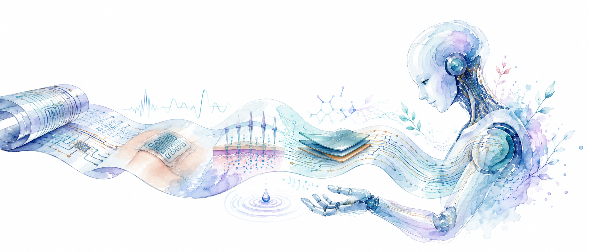

The interface between printed electronics and intelligent machines. Soft, printed circuits become the skin, senses, and energy that let humans and robots meet.
수천 개의 "잉크 방울" 파티클이 잉크 액적 → 인쇄 회로 패턴 → 휘어지는 유연 필름으로 변신하며 순환합니다. 연구실의 공정 스토리(인쇄 → 회로 → 유연소자)를 그대로 3D로 서사화한 안.
The interface between printed electronics and intelligent machines. Soft, printed circuits become the skin, senses, and energy that let humans and robots meet.
유연 기판(flexible substrate)이 물결치듯 휘어지는 3D 메시 위로, 전류 펄스가 회로 트레이스를 따라 흐릅니다. 차분하고 고급스러워 텍스트 가독성이 가장 좋고, 성능 부담도 가장 적은 안.
The interface between printed electronics and intelligent machines. Soft, printed circuits become the skin, senses, and energy that let humans and robots meet.
노드와 시냅스 같은 연결선으로 이루어진 3D 구(球)가 회전하며, 신호 펄스가 연결선을 타고 이동합니다. "인간과 지능형 기계를 잇는 계면"이라는 랩 슬로건을 가장 직접적으로 형상화한 안.

The interface between printed electronics and intelligent machines. Soft, printed circuits become the skin, senses, and energy that let humans and robots meet.
지금 쓰고 있는 로봇 일러스트를 그대로 두고, 인쇄 필름 리본을 따라 잉크 파티클이 흐르고 잉크 방울에서 로봇 손으로 입자가 피어오릅니다. 마우스에 따라 그림 전체가 미세하게 기울어 깊이감이 생깁니다.